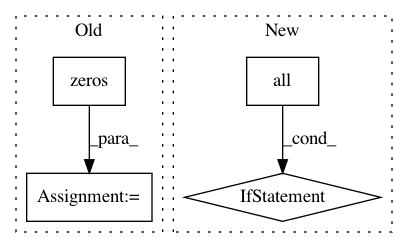

2c339f08da80a6a6d52df37b64fe148155a13e86,cellprofiler/modules/align.py,Align,apply_alignment,#Align#Any#Any#Any#Any#Any#Any#,426
Before Change
//
// Construct a mask over the zero-filling
//
mask = np.zeros(output_pixels.shape, bool)
p1, m2 = offset_slice(pixels, mask, off_y, off_x)
m2[:,:] = True
if image.has_mask:
mask = (mask & most_cropped_image.crop_image_similarly(image.mask))
elif image.has_mask:
mask = most_cropped_image.crop_image_similarly(image.mask)
else:
mask = None
After Change
output_mask = np.zeros(shape, bool)
p1, p2 = offset_slice(image.mask, output_mask, off_y, off_x)
p2[:,:] = p1[:,:]
if np.all(output_mask):
output_mask = None
crop_mask = np.zeros(image.pixel_data.shape, bool)
p1, p2 = offset_slice(crop_mask, output_pixels, off_y, off_x)
p1[:,:] = True
if np.all(crop_mask):
In pattern: SUPERPATTERN
Frequency: 3
Non-data size: 4
Instances
Project Name: CellProfiler/CellProfiler
Commit Name: 2c339f08da80a6a6d52df37b64fe148155a13e86
Time: 2011-02-24
Author: leek@1fc53939-2000-0410-845c-e8453a809027
File Name: cellprofiler/modules/align.py
Class Name: Align
Method Name: apply_alignment
Project Name: freelunchtheorem/Conditional_Density_Estimation
Commit Name: 0911c4f8477ee084c4346616d10387d56a8c58f1
Time: 2018-04-04
Author: jonas.rothfuss@gmx.de
File Name: cde/density_estimator/BaseDensityEstimator.py
Class Name: BaseMixtureEstimator
Method Name: sample
Project Name: freelunchtheorem/Conditional_Density_Estimation
Commit Name: 0911c4f8477ee084c4346616d10387d56a8c58f1
Time: 2018-04-04
Author: jonas.rothfuss@gmx.de
File Name: cde/density_simulation/GMM.py
Class Name: GaussianMixture
Method Name: simulate_conditional